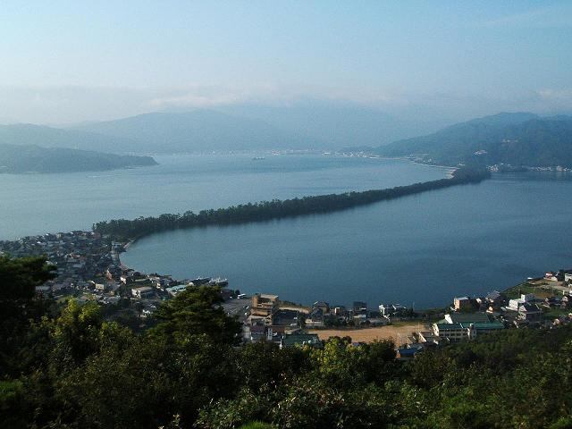
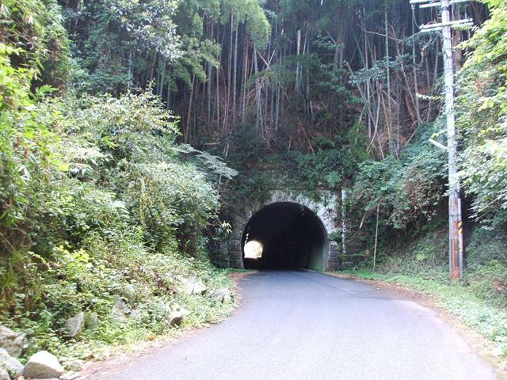
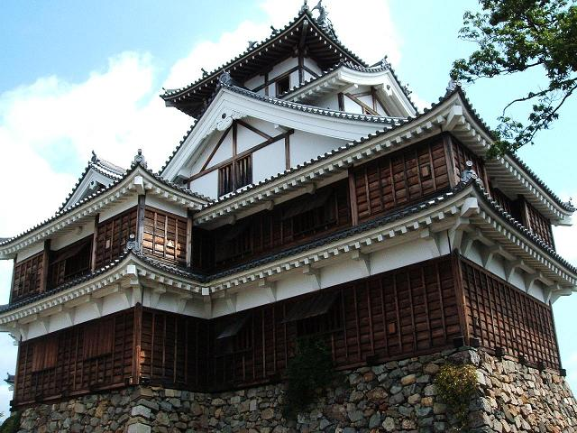
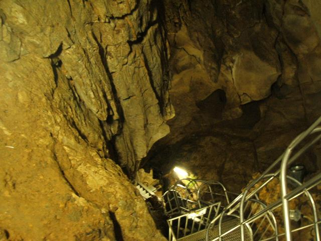

ガソリンを補給し、１７６号線を走り、１７３号線へ。
夜の道はすいていて走りやすくたまに大型トラックがいるくらい。
とにかく北へ走る。
夜の田舎道は 自分専用のコースな感じがしてきてテンションも上がり、
峠のコーナーを走り屋になったかのような気分で
攻める、倒す、曲がる。全然走り屋のバイクじゃないのに。
やべぇおもしろい。
峠道ってものをあまり走ったことはなかったけど、
バイクを傾けて走るってのは思ってた以上におもしろい。
それで出発してから２時間、
とにかく攻める、倒す、曲がる。
とにかく攻める、倒す、曲がる。
・・・ガシャーン！
こけたー！！
人生初の公道クラッシュ。
あーびっくりした。
とりあえず体にケガはないみたいなので一安心。
したのもつかの間、
右サイドミラー割れてる・・orz
うわ、ハンドルも微妙に曲がってる・・orz
出発してから２時間後の事件、テンション激下がり。
今冷静に考えるとなんで俺はあんな急カーブに
７０km近いスピードで突っ込みまくってたんだろうか。
夜の峠ってのは人を狂わす何かが棲んでます、絶対。
それでも走れないことはなかったんで走行再開。
このまま帰ったら切ないことこの上ないんで
なかばやけくそ根性で夜明けまで走った。
舞鶴を経由して午前６時前、天橋立に到着。
よく写真とかで見かける天橋立の景色は山の上からの写真だったりします、
普段はそこまではロープウェーが走ってるんだけど
さすがにこんな朝早くには動いてないので階段を歩いて上ることに。
その数およそ５５０段。
思った以上に階段が過酷すぎて途中で数えるの忘れた、
なんでたぶん５５０段。
天橋立
当たり前だけど平日のこんな朝早くに他には誰もおらず
一人で休憩しながら山頂の公園でのんびり景色を眺めたり、
有名な股覗きをやってみたり。
日本三景の一つを独占したような気分。
のんびりしてたら午前８時。ロープウェーが動き出すころ。
他に人が上ってきそうな気がしたんで下山。
また５５０段降りる。
近くにある日本の滝１００選の一つ、金引の滝を目指す。
・・が入り口の所に「台風被害のため金引の滝 立ち入り禁止」の看板。
あえなく撤退することに。
これから少し横道にそれて旧道を走ったりしながら福知山を目指す。
旧道
福知山城・・天正７年に明智光秀によって築城された城。
といっても今は本丸が残っているだけで想像してたよりこじんまりしてた。
福知山城
そこから南下して次は質志鍾乳洞へ。
この質志鍾乳洞ってのは京都府唯一の鍾乳洞。
京都市からはだいぶ離れたところだけど
まさか京都府内に鍾乳洞があるとは思いもせんかった。
 質志鍾乳洞
質志鍾乳洞この鍾乳洞は縦穴型の鍾乳洞で
山の中腹から入って下っていく感じなんだけど
下る階段の角度が半端じゃなかった。
階段っていうかこれはもう梯子。
質志鍾乳洞
この写真はほぼ真下に向かってシャッターを押した写真。
鍾乳洞の中は真昼でも外と違ってめっちゃ涼しい。たぶん２０度くらい。
だから中に入った時に汗かかんですむと思ったのに
梯子で下る段数がけっこうあって手を滑らせたら大惨事確定。
一回のツーリングで二回も事故るわけにはいかんので 慎重に梯子を降りる。
しかも水滴で梯子の手すりが濡れてるもんだから
外でかく汗とは違う汗をめっちゃかいた。
なんつーか鍾乳洞ってのはRPGでいうダンジョンじゃね。
むっちゃ洞窟っぽいし。
てか洞窟か。
一番奥まで探索し、帰路へ。
鍾乳洞から二時間ちょっと走って池田へ到着。
バイク屋さんに診てもらったら
「兄ちゃんよくこんな状態で走ってたねえ。こりゃ即入院だわ」
この夏に手痛い出費。
退院まで一週間くらいとのこと。
「まぁこけてケガなかっただけでもよかったと思いなよ」 って
言われて、バイク預けて歩いて帰宅。
それからふとテレビつけてたら某金融会社のCMがこんなこと言ってた。
「わすれな〜いで〜♪お金よ〜りも〜大切なものがある〜♪
わすれな〜いで〜♪あなたよ〜りも〜大切なものはない〜♪」
まさかテレビにも諭されることになるとは。
これからは(って言っても普段はしてたつもりだけど)
峠だろうがどこだろうが安全運転します。
今日のおまけ：写真下に載せときます。
| 天橋立 | 天橋立 | |
| 天橋立 | 日本海 | |
| 旧道１ | 旧道２ | |
| 旧道３ | 質志鍾乳洞 | |
| 質志鍾乳洞 | 質志鍾乳洞 | |
| 一庫ダム | 鬼の回廊 | |
| 音無瀬橋１ | 音無瀬橋２ | |
| 福知山城１ | 福知山城２ |